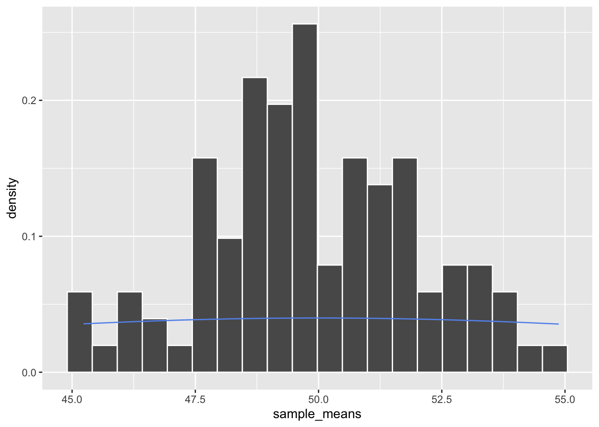
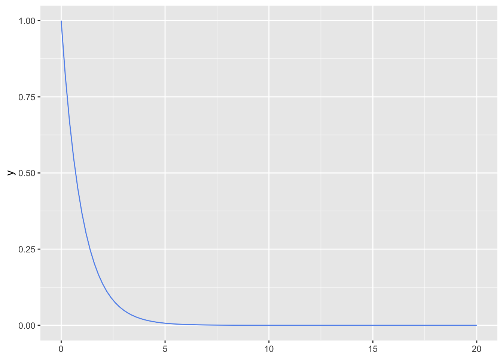

library(tidyverse)03: Sampling Distributions
The goal for today is to understand the concept of a sampling distribution by comparing theoretical results with simulation results using R. We will investigate the sampling distributions of the sample mean.
You’ve been assigned to groups of 3-4 for this activity. You should submit your rendered file on gradescope as a group assignment. If folks from your assigned group did not show up, groups of 2 can combine into groups of 4.
Introduction
A sampling distribution is the probability distribution of a statistic (like the sample mean \(\bar{x}\) or sample variance \(s^2\)) obtained through a large number of samples drawn from a specific population. Understanding sampling distributions is crucial for statistical inference, as it allows us to make probability statements about sample statistics. In this activity, we will generate empirical sampling distributions through simulation and compare them to theoretical results.
Along the way, you’ll get some practice in R and some probability review.
Part 1: Sampling distribution of the mean (Normal population)
Assume data points \(X_1, X_2, ..., X_n\) are sampled from a normally distributed population
If \(X_1, X_2, ..., X_n \sim N(\mu, \sigma^2)\), what is the expected value \(E[\bar{X}]\) and theoretical standard deviation of \(\bar{X}\) (also known as the standard error)?
What is the theoretical distribution of \(\bar{X}\)? (Note: you do not need to prove/derive this!)
Let’s simulate this. Assume our population is \(N(50, 10^2)\) (so \(\sigma=10\)). We will draw samples of size n = 25:
pop_mean <- 50
pop_sd <- 10
sample_size <- 25
n_simulations <- 100
sample_means <- numeric(n_simulations)
for(i in 1:n_simulations){
x <- rnorm(sample_size, mean = pop_mean, sd = pop_sd)
sample_means[i] <- mean(x)
}What is the mean of
sample_means? How close is it to \(E[\bar{X}]\) above?What is the sd of
sample_means? How close is it to the theoretical standard error you found above?The code below makes a histogram of
sample_meansand overlays an incorrect theoretical density curve on top. Replacepop_meanandpop_sdwith the theoretical values that you found in Q1.
df <- data.frame(
sample_means = sample_means
)
ggplot(df, aes(x = sample_means)) +
geom_histogram(aes(y = stat(density)), col = "white", bins = 20) +
stat_function(fun = dnorm, args = list(mean = pop_mean, s = pop_sd), col = "cornflowerblue")
- Try different values for
sample_sizeandn_simulations. When does the histogram match the theoretical density most closely?
Central Limit Theorem
You have (hopefully) just demonstrated the Central Limit Theorem in action. Nice work! The CLT tells us that, as our sample size approaches \(\infty\),
\[F_\bar{X}(\bar{X}) \to N(\mu, \frac{\sigma}{\sqrt{n}})\]
Part 2: Non-normal population
We often use the Exponential distribution to model the time until an event occurs in a process where events happen randomly and independently at a constant average rate (a Poisson process). A common example is the time between consecutive arrivals of customers, like a coffee shop, during a period where the arrival rate is relatively stable. The key parameter is the rate \(\lambda\) (e.g., average customers per minute) or its reciprocal, the mean time \(\mu = 1/\lambda\) (e.g., average minutes between customers). Individual inter-arrival times will follow a skewed distribution (many short times, fewer long times), but the CLT tells us something interesting about the average of these times if we look at many samples.
Let \(X\) be the time (in minutes) between consecutive customer arrivals at a small coffee shop during a specific hour. Suppose this time can be modeled by an Exponential distribution. We observe that, on average over a long period of time, a customer arrives every 5 minutes. This average time is the mean of the distribution, \(\mu = 5\) minutes. What is the rate, \(\lambda\)? What is \(E[X]\) and \(\sigma_X\)? (You can use the distributions cheat sheet in the back of the book)
The code below plots a theoretical exponential distribution with \(\lambda=1\). Change it to the appropriate value.

According to the CLT, if we take a sample of n = 40 consecutive inter-arrival times, what should the approximate distribution of the average inter-arrival time (\(\bar{X}\)) be across many such samples? What are its approximate mean and standard error?
Let’s check our answers through simulation. Replace all
_____with appropriate values in the code chunk below, and then remove the line with#| eval: false.
pop_lambda <- ____
sample_size <- ____
n_simulations <- 1000
sample_means <- numeric(n_simulations)
for(i in 1:n_simulations){
x <- rexp(sample_size, rate = pop_lambda)
sample_means[i] <- mean(x)
}
df <- data.frame(
sample_means = sample_means
)
ggplot(df, aes(x = sample_means)) +
geom_histogram(aes(y = stat(density)), col = "white", bins = 20) +
stat_function(fun = dnorm, args = list(mean = ______, s = ______), col = "cornflowerblue")How well does the normal curve approximate the distribution of the average inter-arrival times, even though the distribution of individual inter-arrival times is heavily skewed (Exponential)?
What happens if the sample size n is much smaller (e.g., \(n=5\))?
Part 3: Discrete data
The true magic of the CLT is that it applies to any probability distribution, even discrete ones!
Example: According to the 2004 American Community Survey, 28% of adults over 25 years old in Utah have completed a bachelor’s degree. In a random sample of 64 adults over age 25 from Utah, what is the probability that at least 30 have a bachelor’s degree?
Let \(X_i\) indicate whether a sampled person has a bachelor’s degree. Then, \(X_1, ...., X_n \sim Binom(n,p)\).
- What is \(n\) and what is \(p\)?
We are interested in how many people have a bachelor’s degree, or \(\frac{\sum X_i}{n}\). This is also an \(\bar{X}\)!
Use the CLT to find \(E[\hat{p}]\) and \(s_{\hat{p}}\).
Use the normal distribution to find \(P(\bar{X} > .3)\) (Hint: use
pnorm)Alternatively, we can answer this question through simulation. Use
sample_meansto estimate this probability. How close are you to your answer from (3)?
pop_p <- .28
sample_size <- 64
n_simulations <- 1000
sample_means <- numeric(n_simulations)
for(i in 1:n_simulations){
x <- rbinom(1, size = sample_size, prob = pop_p)
sample_means[i] <- x/sample_size
}Part 4: Summary and Reflection
- What is the difference between a population distribution, sample distribution, and distribution of a sample?
- Why is the CLT important?
- Give one benefit of finding sampling distributions theoretically with probability
- Give one benefit of finding sampling distributions computationally through simulation
- Does your group have any lingering questions for me?